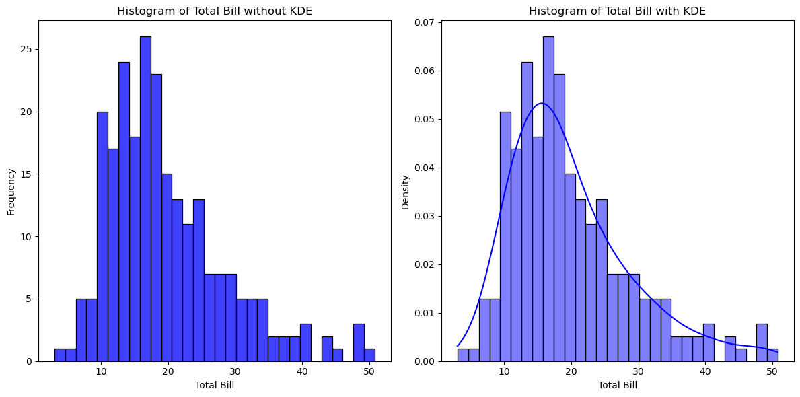

核密度估计 - Kernel Density Estimation, KDE
核密度估计（Kernel Density Estimation, KDE）是一种用于估计连续随机变量概率密度函数的非参数方法。KDE 可以通过对数据点进行平滑处理，生成一个连续的概率密度函数，从而帮助我们理解数据的分布情况。
核密度估计的基本概念
-
核函数（Kernel Function）： 核函数是一个非负的对称函数，其积分为1。常见的核函数包括高斯核（Gaussian kernel）、矩形核（Rectangular kernel）、三角形核（Triangular kernel）等。高斯核是最常用的核函数。
-
带宽（Bandwidth）： 带宽是一个参数，控制核函数的宽度。带宽越大，估计的密度函数越平滑；带宽越小，密度函数越陡峭。选择合适的带宽对于核密度估计的效果至关重要。
-
核密度估计的公式： 对于给定的样本数据 \(X = \{x_1, x_2, \ldots, x_n\}\) 和核函数 \(K\) 以及带宽 \(h\)，核密度估计的公式为：
$$ \hat{f}(x) = \frac{1}{n h} \sum_{i=1}^{n} K\left(\frac{x - x_i}{h}\right) $$
其中，\(\hat{f}(x)\) 是在点 \(x\) 处的估计密度，\(x_i\) 是数据点，\(h\) 是带宽，\(K\) 是核函数。
核密度估计的步骤
-
选择核函数： 通常使用高斯核函数，因为它的平滑效果较好，计算简单。
-
选择带宽： 带宽可以通过交叉验证等方法选择，常见的带宽选择方法包括 Silverman's rule of thumb。
-
计算估计密度： 使用核密度估计公式计算每个点的密度值。
示例
为了展示不使用核密度估计（KDE）平滑数据点和使用KDE平滑数据点的区别，我们可以通过绘制原始数据点的直方图和KDE平滑曲线来进行对比。
以下是一个具体的对比示例，使用 Seaborn 提供的 tips 数据集中的 total_bill 数据。
import seaborn as sns
import matplotlib.pyplot as plt
import pandas as pd
# 加载示例数据集
tips = pd.read_csv("../../data/tips.csv")
# 设置图形大小
plt.figure(figsize=(12, 6))
# 不使用 KDE 的直方图
plt.subplot(1, 2, 1)
sns.histplot(tips["total_bill"], kde=False, bins=30, color="blue")
plt.title("Histogram of Total Bill without KDE")
plt.xlabel("Total Bill")
plt.ylabel("Frequency")
# 使用 KDE 的直方图
plt.subplot(1, 2, 2)
sns.histplot(tips["total_bill"], kde=True, stat="density", bins=30, color="blue")
plt.title("Histogram of Total Bill with KDE")
plt.xlabel("Total Bill")
plt.ylabel("Density")
# 显示图形
plt.tight_layout()
plt.show()

解释
- 左图（不使用 KDE）：
- 仅显示
total_bill的直方图，展示了每个区间的频率。 - 由于没有平滑处理，数据分布可能显得较为粗糙，包含较多噪音。
-
不易看出数据的整体分布形态。
-
右图（使用 KDE）：
- 在直方图上叠加了一条 KDE 曲线，展示了
total_bill的概率密度分布。 - KDE 曲线通过对数据点进行平滑处理，使得分布形态更加连续和平滑。
- 更清晰地展示了数据的集中趋势和多峰结构（如果存在）。
结果对比
- 不使用 KDE 的直方图：
- 数据点较为离散，包含较多随机波动和噪音。
-
无法直观地看出数据的平滑分布和模式。
-
使用 KDE 的直方图：
- 数据点经过平滑处理，消除了部分噪音。
- KDE 曲线提供了一个平滑的概率密度估计，使得数据的分布形态更加清晰和直观。
通过这个对比示例，可以明显看出使用 KDE 进行平滑处理后，数据的分布特征变得更加清晰，更容易理解和分析。
高斯核函数 - Gaussian Kernel Function
高斯核函数（Gaussian Kernel Function），也称为正态核函数，是核密度估计（KDE）中最常用的核函数之一。其公式为：
- \(K(x)\)：核函数的值，在点 \(x\) 处的密度。
- \(\frac{1}{\sqrt{2\pi}}\)：这是高斯核函数的标准化系数，确保核函数的积分为1。
- \(e\)：自然对数的底（约等于2.71828）。
- \(x\)：数据点与核中心的差值。
高斯核函数的图形是一个钟形曲线，与正态分布的概率密度函数形状相同。
核密度估计的公式
在核密度估计中，我们使用核函数对每个数据点进行平滑处理，然后对所有数据点进行加权求和。对于给定的样本数据 \(X = \{x_1, x_2, \ldots, x_n\}\)，带宽为 \(h\) 的核密度估计的公式为：
其中：
- \(\hat{f}(x)\)：在点 \(x\) 处的估计密度。
- \(n\)：样本数据点的数量。
- \(h\)：带宽参数，控制平滑程度。
- \(x_i\)：样本数据点。
- \(K(\cdot)\)：核函数（这里使用高斯核函数）。
将高斯核函数代入核密度估计公式，我们得到：